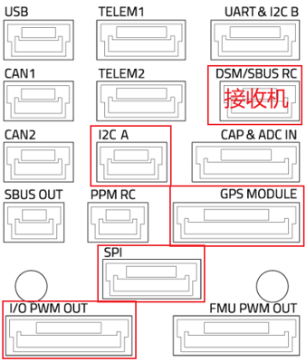
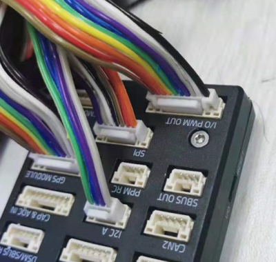
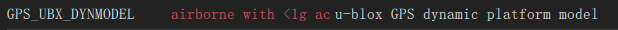
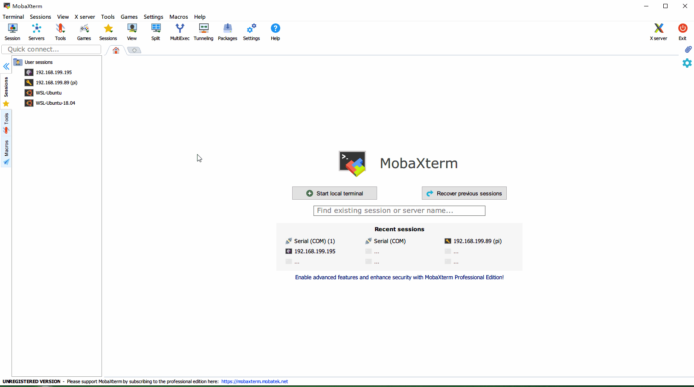

快速开始
首先介绍硬件连接，读者请按照文档指引完成硬件连接。之后介绍软件配置，读者可据此实现第一次运行。
1. 硬件连接
本系统的硬件连接如下图所示。

Tip
本仿真系统也支持飞控系统RflyPilot，连接图如下。详细内容可以参考该RflyPilot的文档。

Tip
可右键单独打开图像查看细节
1.1 关键硬件清单
- 仿真器：ALINX MPSoC开发板，开发板型号AXU2CG-E，主控芯片型号XCZU2CG-SFVC784-1-E
- 自动驾驶仪：Pixhawk 4
- 连接线：GH1.25转杜邦连接线
- 通信模块：正点原子串口转wifi模块
Note
Pixhawk 4 目前已经停售，可以替换为具有外置SPI接口的兼容PX4的自动驾驶仪。下面列举了带有SPI接口的飞控型号，以及基本的型号信息。
| 型号 | 主处理器 | 频率 | 备注 |
|---|---|---|---|
| Pixhawk 4 | STM32F765 | 216MHz | 停售 |
| Pixhawk 5X | STM32F765 | 216MHz | 停售 |
| Pixhawk 6X | STM32H753 | 480MHz | |
| Holybro Durandal | STM32H743 | 480MHz | |
| CUAV V5+ | STM32F765 | 216MHz | |
| CUAV X7+ | STM32H743 | 480MHz | |
| CUAV X7+ Pro | STM32H743 | 480MHz | |
| CUAV Pixhawk V6X | STM32H753 | 480MHz | |
| Kore Carrier board | 仅为载板需要配合Hex Cube | - | 该载板引出了SPI接口 |
1.2 硬件接口定义图
将飞控与开发板对应引脚使用GH1.25杜邦线对应连接在一起, 引脚定义查看下面几副图.
Pixhawk 4 接口定义图
Note
每个接口的左数第一个引脚是PIN 1, 也就是VCC


I2C A接口定义
| Pin | Signal | Volt |
|---|---|---|
| 1(red) | VCC | +5V |
| 2(black) | SCL4 | +3.3V |
| 3(black) | SDA4 | +3.3V |
| 4(black) | GND | +3.3V |
Pixhawk GPS接口定义
| Pin | Signal | Volt |
|---|---|---|
| 1(red) | VCC | +5V |
| 2(black) | TX4(out) | +3.3V |
| 3(black) | RX4(in) | +3.3V |
| 4(black) | SCL1 | +3.3V |
| 5(black) | SDA1 | +3.3V |
Pixhawk SPI接口定义
| Pin | Signal | Volt |
|---|---|---|
| 1(red) | VCC | +5V |
| 2(black) | SCK | +3.3V |
| 3(black) | MISO | +3.3V |
| 4(black) | MOSI | +3.3V |
| 5(black) | CS1 | +3.3V |
| 6(black) | CS2 | +3.3V |
| 7(black) | GND | GND |
Pixhawk I/O PWM OUT同FMU PWM OUT接口定义
| Pin | Signal | Volt |
|---|---|---|
| 1(red) | VDD_SERVO | |
| 2(black) | IO_CH1\FMU_CH1 | +3.3V |
| 3(black) | IO_CH2\FMU_CH2 | +3.3V |
| 4(black) | IO_CH3\FMU_CH3 | +3.3V |
| 5(black) | IO_CH4\FMU_CH4 | +3.3V |
| 6(black) | IO_CH5\FMU_CH5 | +3.3V |
| 7(black) | IO_CH6\FMU_CH6 | +3.3V |
| 8(black) | IO_CH7\FMU_CH7 | +3.3V |
| 9(black) | IO_CH8\FMU_CH8 | +3.3V |
| 10(black) | GND | GND |
Note
以上给出了所用到的接口定义。更详细的接口定义可以参考
Pixhawk4-Pinouts.pdf
开发板IO接口定义图, 管脚和红框中的定义标记依次对应

如上图（图：开发板IO接口定义）所示，将串口wifi模块安装到开发板左下角位置上。效果图如下

1.3 其他连接
1.将开发板的PS串口通过数据线与电脑USB接口连接
Note
串口用于系统调试，建议使用MobaXterm\
Putty\
SecureCRT\
WindTerm
等的工具在电脑上打开串口连接，实现命令行功能。尽管其他的串口助手软件也可使用，但是无法实现命令行的交互效果。
2.连接开发板电源
2. 飞控固件设置
RflySim-RT借助FPGA模拟真实的传感器逻辑从而实现硬件在环仿真的目的。比较通用的做法是将原有传感器去除，并在原有焊接接口上飞线并与仿真平台连接。好在，Pixhawk 4上提供了外置的SPI和I2C接口，可以借助这些接口直接与仿真器连接。因此，需要让飞控默认使用外置SPI和I2C接口，与仿真器进行通信。
这里采用修改PX4启动脚本的方式让自动驾驶仪在启动的时候优先尝试连接外部SPI的IMU，从而实现一次烧录，既能用于仿真也能用于实飞的目的。这里修改飞控的传感器启动脚本进行简单修改重新编译烧录到飞控中。
Note
默认支持PX4 v1.11版本的固件。对于v1.12的支持请参考适配PX4 1.12固件。区别主要在于启动脚本的修改内容有细微的变化。
这里假设用户使用RflySim进行控制算法的开发。为了能够与RflySim-RT实现仿真，需要修改固件源码的启动脚本。对于Pixhawk 4飞控而言，启动脚本路径位于X:\PX4PSP\Firmware\boards\px4\fmu-v5\init\rc.board_sensors。
其他类型的飞控可在路径 \Firmware\boards 中查找。X是RflySim的安装盘符，默认是C盘。
Note
如果使用官方原生固件，也需要到对应的目录Firmware\boards\px4\fmu-v5\init\下修改rc.board_sensors文件，需要修改内容也是一样的。建议使用vscode之类的编辑软件。因为回车符的区别，不建议使用Windows系统的记事本。
使用编辑器打开rc.board_sensors。修改为如下内容
#!/bin/sh
#
# PX4 FMUv5 specific board sensors init
#------------------------------------------------------------------------------
adc start
if ! icm20689 -S start
then
# Internal SPI bus ICM-20602
#icm20602 -s -R 2 start
# Internal SPI bus ICM-20689
icm20689 -s -R 2 start
# Internal SPI bus BMI055 accel/gyro
#bmi055 -A -R 2 -s start
#bmi055 -G -R 2 -s start
# internal compass
#ist8310 -I start
fi
if ! ms5611 -X start
then
# Baro on internal SPI
ms5611 -s start
fi
#icm20689 -S start
#ms5611 -X start修改后的脚本逻辑是优先启动外置传感器，如果启动失败则会启动内置传感器，这样相同的固件可以不经修改既可以运行在本仿真平台上，也可以实飞。当然了，还是建议仿真一个飞控，实飞一个飞控。
Warning
- 请再次确认飞控中安装的PX4飞控固件版本是1.11.3版本。

- 且飞控的模式是四旋翼。

3. 固件参数设置
成功运行仿真系统只需要修改以下参数为指定值，见下图

4. 开发板固件安装
开发板采用SD启动方式。操作步骤如下:
1.从开发板上取下SD卡，使用读卡器将固件复制到SD卡根目录上。
固件下载链接：https://bhpan.buaa.edu.cn:443/link/1FF3201F500F3D00A9C483235A36B653有效期限：2023-09-01 23:59
Warning
- SD卡需要提前格式化为FAT32格式。
- 固件的名字必须是BOOT.bin。
2.通过拨码开关，设置开发板的上电启动模式为SD卡模式。拨码开关设置参考下图，应设置为0101，对应到图中从左到右是上下上下。

3.将SD卡插回到开发板上。
完成以上设置后，给开发板通电，并且连接USB到电脑，可以在设备管理器中看到（确认已经安装CP210X的驱动），使用串口终端连接串口。

这里使用MobaXterm举例打开串口，波特率设置为115200，打开后在串口终端里输入help并且回车。见下图：

当然也可以先连接串口再打开开发板，或者按下开发板的复位键，应该能看到更多启动信息。见下图：

如果连接了串口转wifi模块，打开RflySim3D软件应该可以看到一架四旋翼飞行器出现在窗口中（如果没有显示，请先检查wifi模块是否正常连接到局域网中）

5. 飞控上电
连接飞控与电脑（确保已经按照前面步骤重刷修改过启动脚本的固件），打开QGC可以看到地面站连接到飞控. 在地面站的控制台中输入sensors status 回车，可以看到飞控读取到的传感器信息。

如果配置过程没问题得话，可以获得传感器状态信息如下图。这些传感器数据实际上是FPGA模拟出来的，飞控却会认为这是真实的传感器。

如果没有出现以上效果请再次确认
- 飞控的Px4 版本是1.11.3。
- 且飞行模式是四旋翼模式。
- 确认飞控和开发板物理接线正确。
- 检查地线是否正确连接。